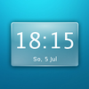
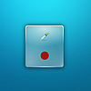

Miniprogramme
Dieser Artikel wurde für die folgenden Ubuntu-Versionen getestet:
Dieser Artikel ist mit keiner aktuell unterstützten Ubuntu-Version getestet! Bitte diesen Artikel testen und das getestet-Tag entsprechend anpassen.
Mit dem Desktop Plasma der vierten Generation von KDE haben auch die vielen hilfreichen und unterhaltsamen Widgets auf dem Desktop Einzug gehalten, die sich "Plasmoide" oder "Plasmoids" nennen. Allesamt eine flexible Skalierbarkeit und zahlreiche Konfigurationsoptionen mitbringend, gibt es Miniprogramme für die unterschiedlichsten Verwendungszwecke und in den verschiedensten Formen und Farben. Sie können nach Belieben positioniert werden, auf der Arbeitsfläche oder in der Kontrollleiste, der Musikspieler Amarok hat sogar eine eigene Ablagefläche für programmspezifische Widgets. Diese Wikiseite soll einen Überblick über die wichtigsten Plasmoide vermitteln, indem die einzelnen Minianwendungen aufgelistet und kurz vorgestellt werden. Doch nicht nur standardmäßig installierte Plasmoide können den Desktop verzieren, auch aus der Community gibt es eine Reihe von interessanten Widgets, zu finden auf KDE-Look.org  .
.
Miniprogramme hinzufügen¶
KDE hat bereits einige Plasmoide standardmäßig dabei, die sofort nach der Installation zur Verfügung stehen. Um ein Widget aus der Auswahl auf dem Desktop zu platzieren, ist ein Rechtsklick auf der Arbeitsfläche und ein Klick auf "Miniprogramme hinzufügen..." erforderlich. Alternativ kann man den Mauszeiger auch zur rechten Ecke am oberen Bildschirmrand bewegen und über das Plasma-Logo das Auswahlfenster öffnen. Die sich öffnende Sammlung von vorinstallierten Miniprogrammen kann man über das Suchfeld unkompliziert durchsuchen und nach bestimmten Kriterien (Favoriten, letzte Verwendung, aktuelle Nutzung) filtern. Anstatt die Schaltfläche "Miniprogramm hinzufügen" zu betätigen, genügt es auch, das Plasmoid via Drag and Drop auf den Desktop zu ziehen, wo sich die Widgets einfach vergrößern, verkleinern oder rotieren lassen.
Aussehen anpassen¶
In der Regel wird das Aussehen eines Plasmoids durch das verwendete Plasma-Theme bestimmt. Es kann aber auch vorkommen, dass das Plasma-Theme keine Darstellung für ein Miniprogramm beinhaltet oder man lieber das Aussehen eines anderen Themes für ein bestimmtes Widget nutzen möchte. Letzteres Problem lässt sich über die Systemeinstellungen lösen: Nach einem Klick auf den Reiter "Erweitert" wählt man den Dialog "Arbeitsflächen-Design-Details" aus. In der erscheinenden Übersicht werden die vorhandenen Elemente der Arbeitsfläche angezeigt. Über das Dropdown-Menü auf der rechten Seite lässt sich für diese beispielsweise das Design eines anderen Themes auswählen oder eine eigene Datei verwenden, etwa für das Symbol des K-Menüs. Darüber hinaus bringen die Miniprogramme von Haus aus eigene Konfigurationsoptionen mit, die ihre Darstellung betreffen. Zu finden sind diese über den Menüpunkt "Einrichten", den man über einen Rechtsklick auf das Plasmoid erreicht. Auf diese Weise lassen sich oftmals die Schriftart und -farbe bestimmter Mini-Anwendungen konfigurieren, abhängig davon, inwieweit die Programmierer eine solche Anpassung vorgesehen haben.
Programmstarter¶
In der Kategorie "Programmstarter" ist Kickoff, das Standardmenü der KDE4, dank seines hohen Funktionsumfangs in der Regel erste Wahl für den Start von Anwendungen. Alternativ steht dem Benutzer das traditionelle K-Menü in Gedenken an vergangene KDE3-Tage zur Verfügung sowie Lancelot, ein weiteres Programmmenü mit dem Ziel, neben den Applikationen auch einen möglichst schnellen Zugang zu Verzeichnissen, Dokumenten und Kontakten zu ermöglichen. Nicht zuletzt bringt KDE einen einfach gestalteten Schnellstarter mit, über den sich die Lieblingsanwendungen in wenigen Sekunden aufrufen lassen.
| Kickoff | Traditionelles K-Menü | Lancelot | Schnellstarter |
Fensterverwaltung¶

Um einen Überblick über die geöffneten Fenster zu behalten, darf der altbewährte Desktopumschalter nicht fehlen, welcher optional auch ein kleines Symbol des Vordergrundprogramms darstellt. Ergänzt wird er durch den klassischen Systemabschnitt der Kontrollleiste, kurz "System Tray", und die Fensterleiste, die sich mit durchdachten Sortierungs- und Gruppierungsoptionen auszeichnet. Ebenfalls bekannt ist die Schaltfläche "Arbeitsfläche anzeigen", mit der sich kurzerhand alle Fenster minimieren lassen.
| Desktop-Umschalter | Systemabschnitt | Fensterleiste | Arbeitsfläche anzeigen |
Zeitanzeige¶
Für die Zeit- und Datumsanzeige ist für nahezu jeden Geschmack ein Widget zu finden. Dabei kann man sich nicht nur zwischen einer optisch anpassbaren Digitaluhr und der klassischen Darstellung als schlichte Analoguhr entscheiden. Die minimalistische Binäruhr, deren Erscheinungsbild bis ins Detail konfiguriert werden kann, und die umgangssprachliche Uhr gehören ebenso zur vorinstallierten Auswahl an Zeitanzeigern. Mit der Eieruhr lassen sich beliebige Countdowns starten und nach deren Ablauf automatisch Hinweismeldungen anzeigen oder Befehle ausführen.
|  | ||||
| Analoge Uhr | Digitale Uhr | Eieruhr | Binäre Uhr | Uhr in Umgangssprache |
Grafiken¶

Um Fotos oder andere Grafiken auch ansprechend auf der Arbeitsfläche zu positionieren, gibt es einen Bilderrahmen, den man bei Bedarf mit runden Ecken oder einer Schattierung versehen kann. Das Comic-Plasmoid bringt die einfache Einbindung sämtlicher Comic Strips von KDE-Files.org mit, die man innerhalb des Konfigurationsdialoges durchstöbern kann. Weniger unterhaltsam, dafür aber sehr nützlich, ist das Farbauswahlwerkzeug, um die Farbe einer beliebigen Stelle des Desktops als HEX-Code anzuzeigen.
|  | ||
| Bilderrahmen | Comic | Farbauswahl |
Dateiverwaltung¶

Wer einen schnellen Überblick über eine Konfigurationsdatei gewinnen möchte, kann mit dem Dateiüberwachungs-Plasmoid den Dateiinhalt auf der Arbeitsfläche darstellen und Veränderungen im Blick behalten. Ebenso hilfreich ist die Erinnerung, wann der Mülleimer mal wieder entleert werden sollte, in Form eines Oxygen-Icons mit zusätzlicher Information über die Menge der enthaltenen Dateien. Für eine Voransicht einer dieser Dateien lässt sich die Datei ohne Umstände auf das Miniprogramm "Vorschau" ziehen, welches mit vielen Dateiformaten umgehen kann. Oft sind es bestimmte Verzeichnisse, die man regelmäßig im Dateibrowser öffnet. Um die darin befindlichen Ordner und Dateien schneller erreichen zu können, haben die Entwickler das Schnellzugriff-Widget aufgenommen.
| Datei-Überwachung | Mülleimer | Vorschau | Schnellzugriff |
Spiel und Spa߶

Als kleine Unterhaltung zwischendurch stehen verschiedene Applikationen der Kategorie "Spiel und Spaß" zur Verfügung. Darunter auch Conways_Spiel_des_Lebens in Widget-Form, ein beliebtes Spiel des Mathematikers John Horton Conway. Während der gut anpassbare Bball das Gehirn weniger beansprucht, ist beim Spiel "Fünfzehn Steine" Denkarbeit gefragt, wenn es darum geht, die nummerierten Spielsteine in die richtige Reihenfolge zu bringen. Zu guter Letzt ist auch das Widget "Augen" vorinstalliert in Anlehnung an das schlichte, aber traditionsreiche Computerprogramm Xeyes .
| Life-Spiel | Bball | Fünfzehn Steine | Augen |
Web und Nachrichten¶

Anstatt für jede Aktivität den Webbrowser zu starten, lassen sich viele Aufgaben auch über die Miniprogramme erledigen. So findet sich in der Plasmoid-Auswahl auch ein eigenes Webbrowser-Widget, mit dem sich Informationen schnell im Web nachlesen lassen. Die Applikation "Konqueror-Profile" hilft dabei, die verwendeten Profile des hauseigenen KDE-Browsers zu überwachen. Als Alternative für einen Feedreader dienen "RSSNow" und das News-Plasmoid, die eine ganze Feedsammlung aufnehmen und diese nach bestimmten Kriterien gefiltert anzeigen können. Um an dem stetig wachsenden Microblogging-Service Twitter auch auf der Arbeitsfläche teilnehmen zu können, bringt die KDE auch für diesen Zweck ein Miniprogramm mit. Bei all den Internetanwendungen der KDE hilft der "Posteingang" dabei, alle neuen Nachrichten von Mail- oder Messengerprogrammen zu bemerken.
 | |||||
| Webbrowser | Konqueror-Profile | RSSNow | News | Twitter Microblogging | Posteingang |
Büro und Bildung¶
Durch KNotes schon längst bekannt, ist die Funktion, kleine Notizzettel auf dem Desktop abzulegen, welche nun auch mit dem Notizen-Plasmoid auf dem Plasma-Desktop Einzug hält. In ähnlicher Form lassen sich für den abwesenden Nutzer des Computers Nachrichten hinterlassen, die dann später als kleine Hinweisboxen gelesen werden können. Damit die zu erledigenden Termine sorgfältig geplant werden können, steht ein übersichtlicher Kalender bereit und für die zwischendurch anfallenden Kalkulationen haben die Entwickler einen kleinen Taschenrechner hinzugefügt.
| Notizen | Kalender | Nachricht hinterlassen | Rechner |
Geographie und Wetter¶
Neben der Wetterstation, die Informationen über Temperatur, Luftdruck und -feuchtigkeit sowie die Windverhältnisse darstellt, wurde ein anschauliches 3D-Modell von "Mutter Erde" bereitgestellt, um beispielsweise einmal die andere Seite unseres Planeten betrachten zu können. Darüber hinaus können alle Astronomie-Interessierten mit dem Widget "Luna" auf einen Blick die aktuelle Mondphase anschauen.
 | ||
| Mutter Erde | Wetterstation | Luna |
System und Netzwerk¶
Weil es nicht schaden kann, immer ein Auge auf die wichtigsten Komponenten des Systems zu haben, gibt es im Bereich der Systemüberwachung eine Reihe von hilfreichen Applikationen. Dazu gehören die Belegung der vorhandenen Festplatten und die Netzwerkaktivitäten ebenso wie die angeschlossenen Datenträger. Zusätzlich zu einem allgemeinen Systemmonitor gibt es ebenfalls Miniprogramme für die Temperaturkontrolle und den Ladestatus des Akkus.
| Festplatten-Überwachung | Netzwerk-Monitor | Geräte-Überwachung | Systemmonitor | Temperatur-Überwachung | Akku-Überwachung |
Diverses¶
Damit nicht genug, gibt es auch noch ein paar Plasmoide, die nennenswert sind, aber nur schwer in eine Kategorie einzuordnen sind. Dort zu finden sind beispielsweise das Miniprogramm "Bildschirmsperrung und Abmeldung", das dem Nutzer den Weg über das K-Menü erspart, oder der Start unterschiedlicher Kate-Sitzungen. Ergänzt werden sie durch das Plasmoid "Konsolen-Profile" und die Anzeige des gespielten Musiktitels, etwa um seinen Musikgeschmack auf einem Screenshot zum Ausdruck zu bringen. Nicht zuletzt sind das Widget-Dashboard, ein "Armaturenbrett" für die Miniprogramme, und die Zeichenauswahl, mit welcher sich Zeichen aus verschiedenen Schriftarten durchsuchen und kopieren lassen, nennenswert.
| Abmeldung | Kate-Sitzungen | Konsolen-Profile | Musiktitel-Anzeige | Widget-Dashboard | Zeichenauswahl |
 Übersichtsartikel
Übersichtsartikel- Erstellt mit Inyoka
-
 2004 – 2017 ubuntuusers.de • Einige Rechte vorbehalten
2004 – 2017 ubuntuusers.de • Einige Rechte vorbehalten
Lizenz • Kontakt • Datenschutz • Impressum • Serverstatus -
Serverhousing gespendet von